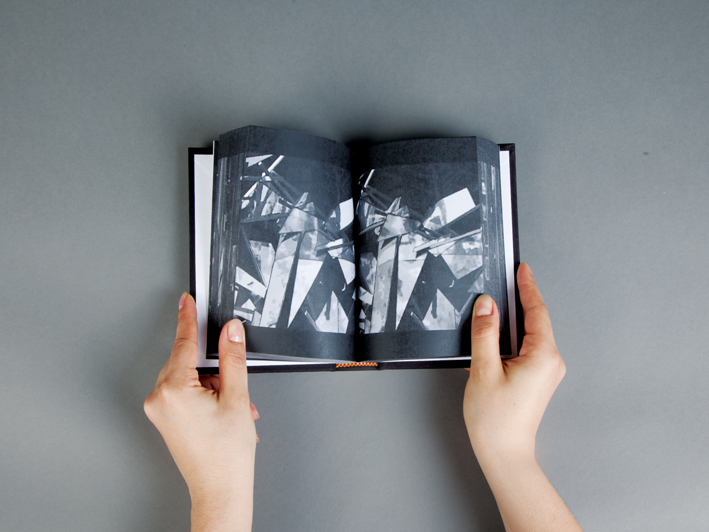
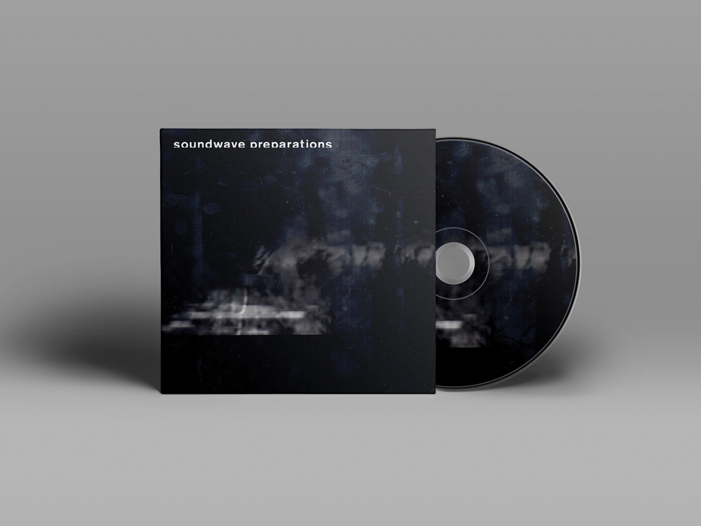
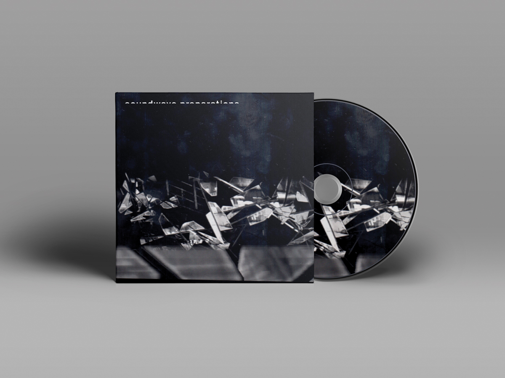
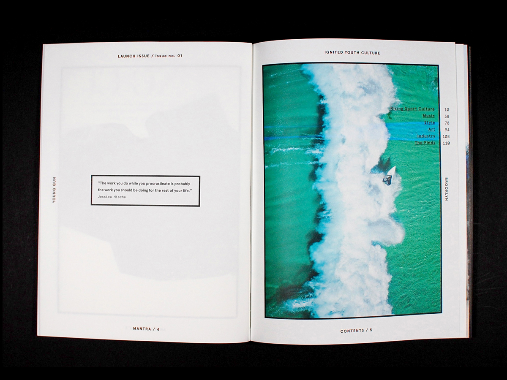
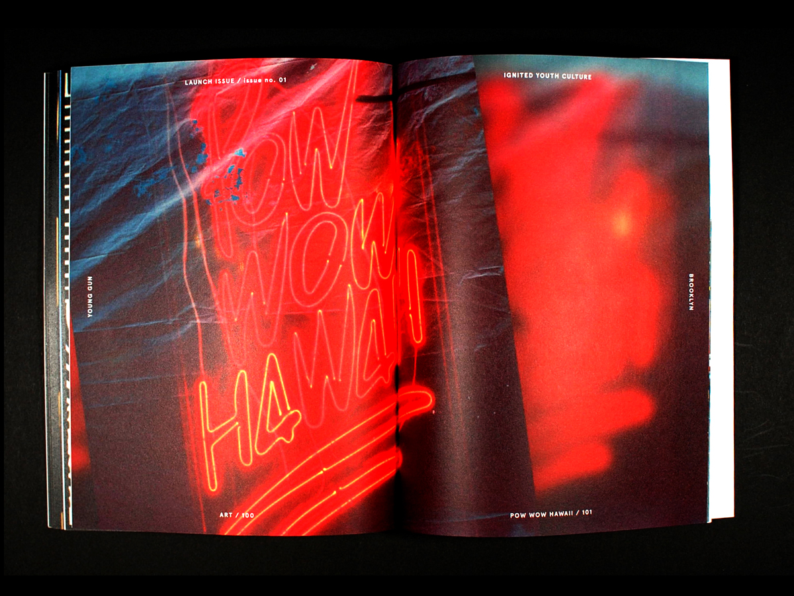
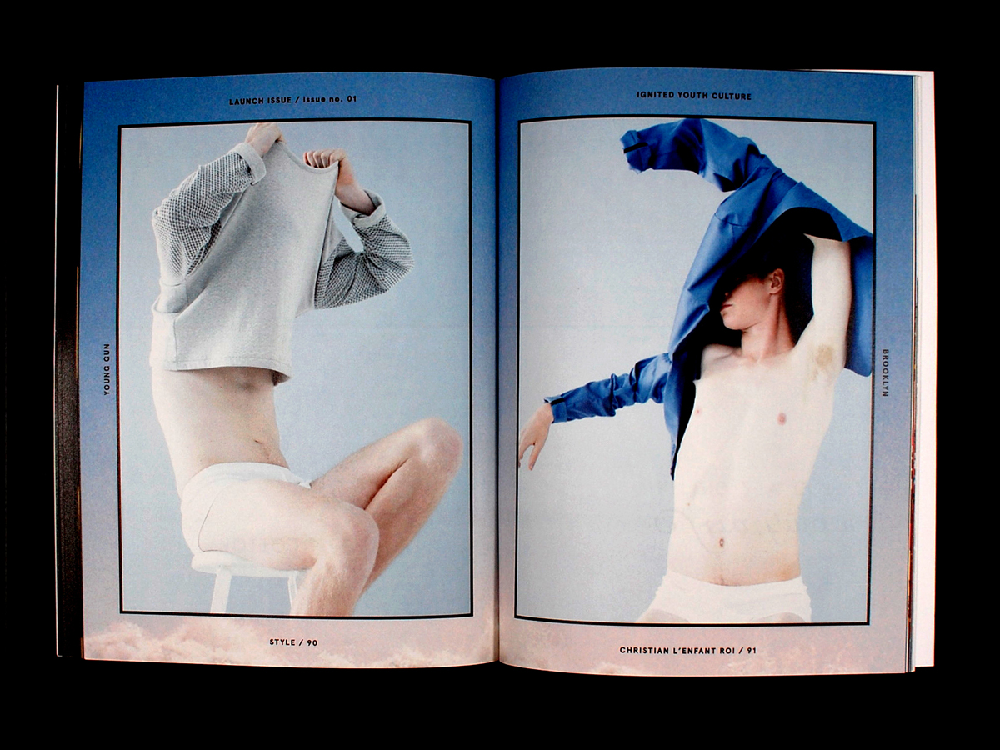
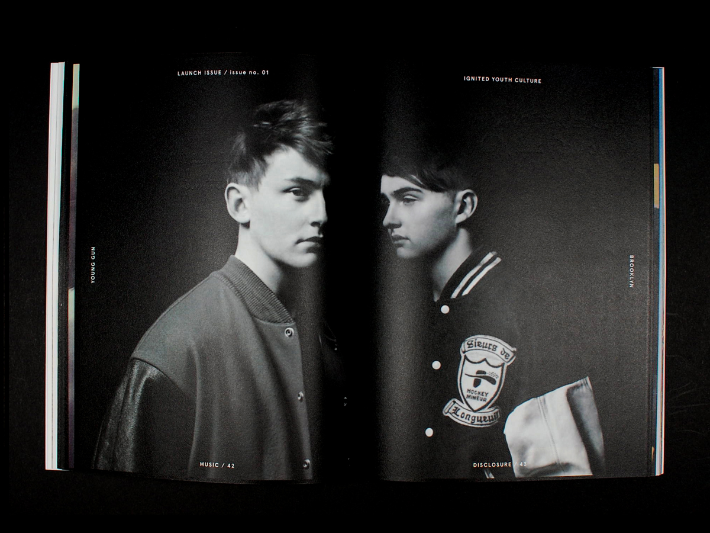
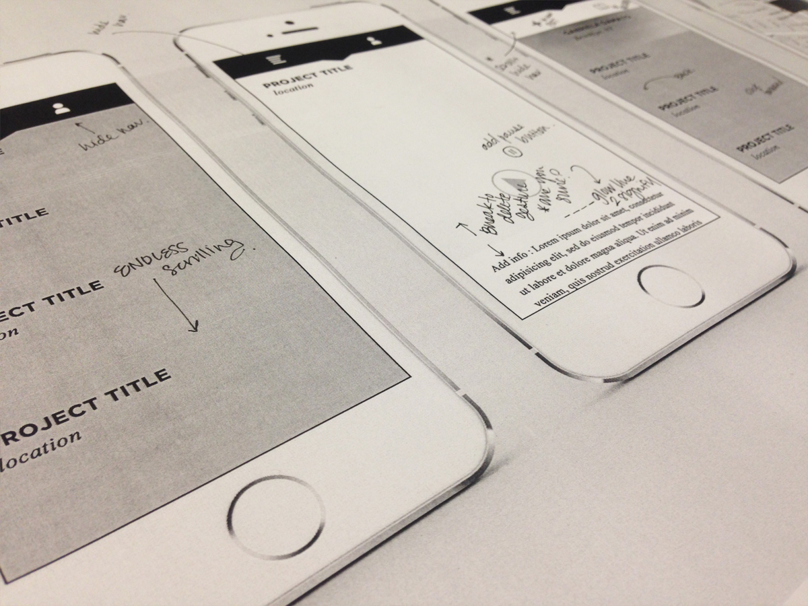
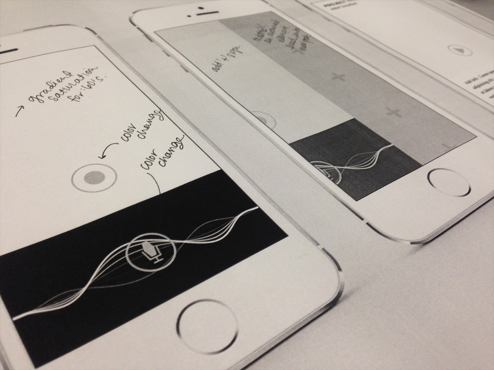

Currently pursuing an MFA at the Yale School of Art, Gabriela d'Amato is a graphic designer based in the greater New York City area. She has a BA in art history, also from Yale, and professional experience as a communications strategist, writer, and editor.
For inquiries, contact her at hello@g-damato.com.








Soundwave Preparations (2014)
Identity Design - Book Design
Soundwave Preparations = an Imprint whose representational approach is defined by its engagement with all stages of a given musical project. A project motivated by the desire to diversify our sensory understanding of sound through the sampling of non-sonic material. Through the analysis of compositional elements, Soundwave preparations provides an alternative stance amongst the standards of contemporary musical classifications. Its designed output acts as an instrument of organization and audiovisual contribution. Soundwave Preparations is both curated and comprised by the multidisciplinary work of Gabriela d'Amato, combining sonic and digital minimalism across all products within the evolving identity.
Methodology = Analyze, Synthesize, Materialize.








Young Gun Magazine (2013)
Editorial Design - Art Direction
Young Gun, the phrase by definition means a relative newcomer to an event or industry. Misunderstood, yet wherever they are - making a splash. I am so very pleased to present you with spreads from the first edition of Young Gun Magazine, a publication focused on "Ignited Youth" and their craft. Each article, interview, and photograph featured within this first edition highlights the inspiring artists and athletes shifting their industries from the inside out. As have the contributors, this material has traveled the globe, having origins in the United States and moving onward internationally. Special focus in this issue is placed upon The United States, Europe and South America as the fundamental powerhouses of youth culture. It's about motivated youth - and the communities they create in order to be seen.
Issues Printed - 18


256 (2013)
Zero Technology - Research Specimen
A collection of xeroxed images representing various elements of Pairs, Patterns, & Repetition. No design software was used in the making of this book. Images Sourced from: Apartamento, Frame, Mark, Conveyor Magazine, Kinfolk Magazine, Hello Mr, Aperture, Wax Magazine, Hobo Magazine, The Selby,
Issues Printed - 3





Future Symphonies (2014)
Interactive Design
Soundwave Preparations = a mobile application that allows one to re-imagine their sonic environment. Through the combination of audio and video content, the urban space becomes a playground for alternative thinking and documentation. By publishing and engaging with sonic commentary, each and every proposition becomes an advocate for change and curiosity. Because well considered thinking trumps social clout, network followers, cross platform sharing, and "likes" are absent from the platform.
All content propositions are viewable at vimeo.com/gabrieladamato

Vetted by CoDivide (2014)
Package Design
Cover art for my single "From what I gain" released February 2014.
Listen to CoDivide at soundcloud.com/codivide.
Purchase this track at codivide.bandcamp.com.
Elegant Degradation (2014)
Poster
A poster for the artists collective Elegant Degradation on their debut adapted production of Orestes 2.0.

Miracles of Modern Science (2013)
Identity Design
Miracles of Modern Science are a string section in mutiny: guitars overboard! The Brooklyn, NY band squeezes together classical textures, disco kinetics, and explosive dynamics you might file under "post-rock" if their instruments weren't decidedly pre-rock.
Please visit:
www.miraclesofmodernscience.com

20 to 50 / 10 (2014)
Research
A book of reference material for Thesis research at Parsons the New School for Design.
Content Credits:
Data.Anatomy [Civic] (2012)
A data-driven display from Ryoji Ikeda that explores the interior of an automobile.
© two zero one four okay